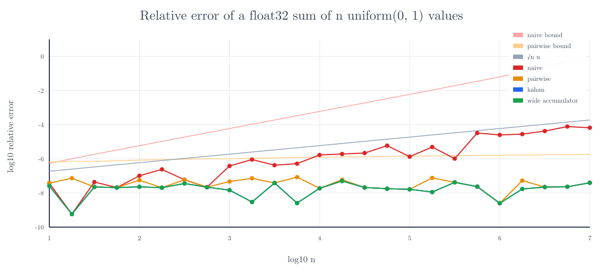
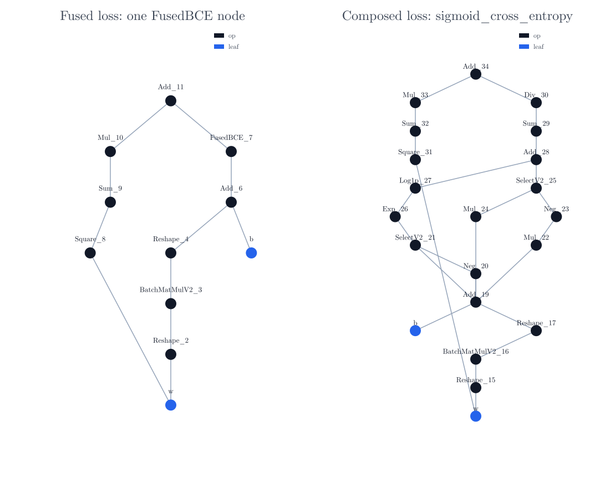

Custom Operation Kernels: Raw Loops on the Tape
Abstract
A custom operation is the lowest level at which a model can be changed: a loop over raw memory
that the autograd tape treats as one node. Writing one means deciding things the library otherwise decides.
Which dtypes are allowed? What shapes are valid? How is work split across threads? How are numbers
added? What gradient goes with the result? This report builds two operations, an elementwise scale-and-shift and a row sum, from new
library helpers for dtype dispatch, a parallel map and summation, and checks their gradients to second order. The theory
covers three things that decide a kernel's quality. Summation error: in float32, naive summation of \(10^7\) uniform values is off by \(6.7\times10^{-5}\) relative, close to
the typical \(\sqrt n\,u\) and far inside the worst-case bound \(nu\). Pairwise, Kahan and double-accumulator summation all return the correctly
rounded sum. Memory traffic: a fused one-pass kernel runs at the speed of a copy and is about twice as fast as the same
arithmetic composed from two operations. Determinism: an elementwise kernel is bit-identical at any thread count, while splitting a naive
float32 sum of \(1.7\times10^7\) values into chunks moves the answer by up to 10 442 units in the last place. Finally, a fused binary cross-entropy kernel for ridge-penalised
logistic regression on the breast-cancer data cuts the tape from 19 operations to 9. It gives the same coefficients as the
composed loss to \(2\times10^{-16}\) and matches scikit-learn to the printed four decimals. The library gained nn::dispatch_floating,
nn::map_elements, nn::sum_with, nn::Summation and nn::summation_error_bound (in nn/kernel.hpp).
The problem
The previous report in this group (custom_gradient) wrote custom backward functions on top of nn's own
operations. Sometimes the forward pass itself must be new code: a function the library lacks, a fused
version of several operations, or a call into hand-tuned code. Such a kernel reads and writes raw
memory, so the library's guarantees no longer apply automatically. The kernel must check dtypes and shapes,
handle strided views, use threads safely, add numbers accurately, and supply its own gradient.
This report replaces the original example examples/nn/0_foundations/0.1_tensors_graphs_sessions/custom_op_kernel.cpp,
a port of TensorFlow's custom-op tutorial. TensorFlow splits an op into a definition (REGISTER_OP, with attributes and a
shape function), kernels per device and dtype (REGISTER_KERNEL_BUILDER) and a gradient (REGISTER_GRADIENT_OP), all registered by
static initialisers. nn has no registry. An operation is an nn::Function built at run time, which maps the TensorFlow parts as follows:
- the attributes become values captured when the function is built;
- the shape function becomes a check at the top of the kernel, which runs eagerly, so build time and run time coincide;
- the per-dtype kernel becomes one template dispatched on the dtype;
- the gradient becomes the function's backward.
The method
Anatomy of an operation
An operation \(y=\phi(x;\theta)\) with attributes \(\theta\) needs four parts.
- Definition and validation. Which dtypes and ranks are accepted, and the output's shape as a function of the input's. A rank-2 input with shape \([r,c]\) gives a row sum of shape \([r]\). Errors are raised before any memory is touched.
- Packing. A tensor may be a strided view (a transpose, a slice). The simplest correct kernel calls
contiguous()first, which copies only when needed, and then indexes \(x[i\cdot c+j]\). - The loop, written once as a template over the element type
Tand instantiated bynn::dispatch_floating(dtype, …)for float and double.nn::map_elements(x, f)packages the elementwise case: pack, allocate, and callfon chunks of the flat range throughnn::parallel_for. - The gradient, a vector-Jacobian product as in the previous report. For scale-and-shift, \(\bar x=s\,\bar y\). For the row sum,
\(y_i=\sum_jx_{ij}\) gives \(\partial y_i/\partial x_{ij}=1\), so \(\bar x_{ij}=\bar y_i\): each row's adjoint is copied along the row (
broadcast_to).
Rounding error of summation
Floating-point addition rounds: \(\mathrm{fl}(a+b)=(a+b)(1+\delta)\) with \(\lvert\delta\rvert\le u\), the unit roundoff, \(2^{-24}\approx5.96\times10^{-8}\) in float32 and \(2^{-53}\) in float64. Adding \(x_1,\dots,x_n\) left to right, the term \(x_i\) passes through \(n-i+1\) roundings (\(x_1\) through \(n-1\)). Multiplying out the factors \((1+\delta)\) gives the classical bound (Higham, 2002, §4.2)
The bound is linear in \(n\). If the rounding errors behave like independent random signs, their sum grows only like \(\sqrt n\,u\), the typical case. Three remedies change the constant:
- Pairwise summation adds the two halves recursively. Each term then passes through about \(\log_2n\) roundings, so the bound is \(\gamma_{\lceil\log_2n\rceil}\). The library version sums blocks of 8 naively, which adds 7.
- Kahan's compensated summation carries the part of each addition that was rounded away, \(c=(t-s)-y\), into the next term. Its bound \(2u+O(nu^2)\) is independent of \(n\) until \(n\approx1/u\).
- A wide accumulator adds float32 values in double and rounds once at the end. Its error is \(u\) from the final rounding, plus
\(\gamma_{n-1}\) at \(u=2^{-53}\), which is negligible below \(n\approx10^{9}\). That is what
nn::sumdoes for float32.
nn::sum_with(values, n, method) implements the four methods and nn::summation_error_bound(method, n, dtype) returns the factor
multiplying \(\sum\lvert x_i\rvert\) in each bound.
Memory-bound kernels and fusion
An elementwise kernel does a few arithmetic operations per element, against 8 bytes moved for a float32 read and write. On current hardware that is far below the arithmetic a core can sustain per byte of memory bandwidth (the "roofline", Williams, Waterman and Patterson, 2009), so for arrays larger than the caches the running time is
Computing \(2x+0.5\) as two operations reads \(x\), writes a temporary, reads it and writes the result: 16 bytes per element. One fused pass moves
- The prediction is that the fused kernel runs at the speed of a plain copy and the composed version takes twice as long, whatever
the arithmetic.
Determinism under parallelism
nn::parallel_for splits a range into chunks that may run on different threads. An elementwise kernel writes each output from its own input,
so the result is bit-for-bit independent of the number of chunks. A reduction is not: floating-point addition is not associative,
and splitting a sum into \(k\) partial sums changes the order of the roundings. A reproducible reduction must therefore fix its order:
nn::sum gives each output row to one thread and accumulates that row in a fixed order. The RowSums kernel below does the same, and splits
across rows, never within one.
Simple examples
ScaleShift and RowSums
The program builds ScaleShift(x; s, b) = \(sx+b\) on nn::map_elements, and RowSums(x; method) with the summation method as
an attribute and a parallel loop over rows. It then uses both on \(x=\begin{pmatrix}1&2&3\\4&5&6\end{pmatrix}\) and checks a composition of them with gradcheck and gradgradcheck.
#include <dm/dm.hpp>
namespace nn = dm::nn;
using nn::Tensor;
using Tensors = std::vector<Tensor>;
// ScaleShift(x; scale, shift) = scale x + shift, any floating dtype, elementwise.
nn::Function scale_shift(double scale, double shift) {
return nn::Function(
"ScaleShift",
[=](const Tensors& in) {
return Tensors{nn::map_elements(in[0], [=](auto v) { return v * static_cast<decltype(v)>(scale) + static_cast<decltype(v)>(shift); })};
},
[=](const Tensors&, const Tensors&, const Tensors& g) { return Tensors{g[0] * scale}; });
}
// RowSums(x; method): the sum of each row of a matrix, with the summation method as an attribute.
nn::Function row_sums(nn::Summation method) {
return nn::Function(
"RowSums",
[=](const Tensors& in) {
const Tensor& x = in[0];
if (x.dim() != 2) // the shape function: rank 2 in, [rows] out
throw std::invalid_argument("RowSums: expected a matrix, got shape " + nn::shape_str(x.shape()));
const Tensor packed = x.contiguous();
const std::int64_t rows = x.shape()[0], cols = x.shape()[1];
Tensor out = nn::empty({rows}, x.dtype());
nn::dispatch_floating(x.dtype(), "RowSums", [&](auto tag) {
using T = decltype(tag);
const T* src = packed.data_ptr<T>();
T* dst = out.data_ptr<T>();
nn::parallel_for(0, rows, 64, [&](std::int64_t lo, std::int64_t hi) {
for (std::int64_t i = lo; i < hi; ++i) dst[i] = nn::sum_with(src + i * cols, cols, method);
});
return 0;
});
return Tensors{out};
},
// d(row sum i)/d x_ij = 1: the adjoint of row i is copied across that row.
[](const Tensors& in, const Tensors&, const Tensors& g) {
return Tensors{nn::broadcast_to(nn::expand_dims(g[0], 1), in[0].shape())};
});
}
int main() {
auto x = nn::tensor({{1, 2, 3}, {4, 5, 6}}).requires_grad_(); // float32
const Tensor y = scale_shift(2.0, 0.5)(x);
const Tensor yd = scale_shift(0.5, -1.0)(nn::cast(x.detach(), nn::DType::Float64));
const Tensor s = row_sums(nn::Summation::Kahan)(y);
std::print("- ScaleShift(x; 2, 0.5) = {} ({})\n", y.values_str(), nn::dtype_name(y.dtype()));
std::print("- ScaleShift(x; 0.5, -1) in float64 = {} ({})\n", yd.values_str(), nn::dtype_name(yd.dtype()));
std::print("- RowSums(ScaleShift(x; 2, 0.5)) = {}\n", s.values_str());
std::print("- d sum(y²)/dx = {} (2 y · scale)\n", nn::grad(nn::sum(nn::square(y)), {x})[0].values_str());
std::print("- d sum(RowSums(x)²)/dx = {} (2 · row sum, copied along each row)\n",
nn::grad(nn::sum(nn::square(row_sums(nn::Summation::Naive)(x))), {x})[0].values_str());
const auto f = [](const Tensors& in) { return nn::sum(nn::square(row_sums(nn::Summation::Pairwise)(scale_shift(2.0, 0.5)(nn::square(in[0]))))); };
const Tensor x64 = nn::cast(x.detach(), nn::DType::Float64).requires_grad_();
const auto r1 = nn::gradcheck(f, {x64}), r2 = nn::gradgradcheck(f, {x64});
std::print("- gradcheck of sum(RowSums(ScaleShift(x²))²): ok = {}, error {:.1e}; gradgradcheck: ok = {}, error {:.1e}\n", r1.ok,
r1.max_abs_error, r2.ok, r2.max_abs_error);
const auto t = nn::tape({f({x64})}, {{x64, "x"}});
std::print("\n{}\n", t.to_markdown());
for (auto&& [label, call] : std::vector<std::pair<std::string, std::function<void()>>>{
{"RowSums of a vector", [] { (void)row_sums(nn::Summation::Naive)(nn::tensor({1, 2, 3})); }},
{"ScaleShift of int32", [] { (void)scale_shift(1, 0)(nn::tensor({1, 2}, {2}, nn::DType::Int32)); }}}) {
try {
call();
} catch (const std::exception& e) {
std::print("- {}: `{}`\n", label, e.what());
}
}
}- ScaleShift(x; 2, 0.5) = [[2.5, 4.5, 6.5], [8.5, 10.5, 12.5]] (float32)
- ScaleShift(x; 0.5, -1) in float64 = [[-0.5, 0, 0.5], [1, 1.5, 2]] (float64)
- RowSums(ScaleShift(x; 2, 0.5)) = [13.5, 31.5]
- d sum(y²)/dx = [[10, 18, 26], [34, 42, 50]] (2 y · scale)
- d sum(RowSums(x)²)/dx = [[12, 12, 12], [30, 30, 30]] (2 · row sum, copied along each row)
- gradcheck of sum(RowSums(ScaleShift(x²))²): ok = true, error 2.9e-06; gradgradcheck: ok = true, error 1.3e-06
| Node | Operation | Shape | Inputs |
|---|---|---|---|
| Sum_308 | Sum | [] | Square_307 |
| Square_307 | Square | [2] | RowSums_306 |
| RowSums_306 | RowSums | [2] | ScaleShift_305 |
| ScaleShift_305 | ScaleShift | [2, 3] | Square_304 |
| Square_304 | Square | [2, 3] | x |
| x | Leaf | [2, 3] |
- RowSums of a vector:
RowSums: expected a matrix, got shape [3] - ScaleShift of int32:
map_elements: expected float32 or float64, got int32
By hand: \(2x+0.5\) gives \((2.5,4.5,6.5)\) and \((8.5,10.5,12.5)\), with row sums 13.5 and 31.5. For \(L=\sum y^2\), \(\bar x=2y\cdot s=4y\), which is \((10,18,26)\) and \((34,42,50)\). For \(L=\sum_i(\text{row sum}_i)^2\), \(\bar x_{ij}=2\cdot\text{row sum}_i\), so 12 across the first row and 30 across the second. All of these match. The float64 instantiation was used when the input was float64, with no extra code. The composition passes both checks, and on the tape each custom operation is one node, between built-in ones. The rank and dtype checks reject bad inputs with a message before any memory is read.
Checking the theory
Summation error against the bounds
The program sums the first \(n\) of \(10^7\) float32 values drawn uniformly from \((0,1)\) by each method, for \(n\) from 10 to \(10^7\). The reference is the exact sum, from compensated summation in long double. All terms are positive, so \(\sum\lvert x_i\rvert=s\) and the bounds apply to the relative error directly.
#include <dm/dm.hpp>
namespace nn = dm::nn;
using nn::Tensor;
int main() {
std::filesystem::create_directories("build");
// Rows of n float32 values drawn uniformly from (0, 1), for n from 10 to 10^7.
// Reference: the exact sum, from long double Kahan summation of the exactly converted values.
nn::Generator gen(11);
const std::int64_t N = 10'000'000;
const auto all = nn::uniform({N}, 0.0, 1.0, gen).to_vector<float>();
const nn::Summation methods[] = {nn::Summation::Naive, nn::Summation::Pairwise, nn::Summation::Kahan, nn::Summation::WideAccumulator};
std::vector<double> lns;
std::vector<std::vector<double>> errs(4), bounds(4);
std::print("| n | exact sum | naive | pairwise | Kahan | wide accumulator | naive bound | pairwise bound |\n");
std::print("| ---: | ---: | ---: | ---: | ---: | ---: | ---: | ---: |\n");
for (double e = 1.0; e <= 7.0 + 1e-9; e += 0.25) {
const auto n = static_cast<std::int64_t>(std::llround(std::pow(10.0, e)));
long double s = 0, c = 0;
for (std::int64_t i = 0; i < n; ++i) {
const long double yv = static_cast<long double>(all[i]) - c, t = s + yv;
c = (t - s) - yv;
s = t;
}
lns.push_back(e);
std::vector<double> rel(4);
for (int m = 0; m < 4; ++m) {
const float got = nn::sum_with(all.data(), n, methods[m]);
rel[m] = std::abs(static_cast<long double>(got) - s) / s; // all terms positive: sum |x| = s
errs[m].push_back(std::log10(std::max(rel[m], 1e-10)));
bounds[m].push_back(std::log10(nn::summation_error_bound(methods[m], n, nn::DType::Float32)));
}
if (std::abs(e - std::round(e)) < 1e-9)
std::print("| 10^{:.0f} | {:.1f} | {:.1e} | {:.1e} | {:.1e} | {:.1e} | {:.1e} | {:.1e} |\n", e, static_cast<double>(s), rel[0], rel[1], rel[2], rel[3],
nn::summation_error_bound(nn::Summation::Naive, n, nn::DType::Float32),
nn::summation_error_bound(nn::Summation::Pairwise, n, nn::DType::Float32));
}
std::print("\nUnit roundoff of float32: u = 2^-24 = {:.2e}. \n", std::ldexp(1.0, -24));
// nn::sum agrees with the wide accumulator.
const float lib = nn::sum(nn::from_vector(all, {})).item<float>();
std::print("nn::sum of all 10^7 values = {:.1f}, wide accumulator = {:.1f}\n", lib, nn::sum_with(all.data(), N, nn::Summation::WideAccumulator));
auto plot = dm::graphics::RPlot::create();
const dm::graphics::RGB col[] = {{220, 38, 38}, {234, 140, 0}, {37, 99, 235}, {22, 163, 74}};
const dm::graphics::RGB light[] = {{252, 165, 165}, {253, 205, 140}, {147, 197, 253}, {134, 239, 172}};
for (int m = 0; m < 2; ++m) {
std::vector<double> bx, by;
for (std::size_t i = 0; i < lns.size(); ++i)
if (bounds[m][i] <= 0) bx.push_back(lns[i]), by.push_back(bounds[m][i]);
plot.lines(bx, by, nn::summation_name(methods[m]) + " bound", light[m], 1.5);
}
std::vector<double> rx{1, 7}, ry{std::log10(std::sqrt(10.0) * std::ldexp(1.0, -24)), std::log10(std::sqrt(1e7) * std::ldexp(1.0, -24))};
plot.lines(rx, ry, "√n u", dm::graphics::RGB{148, 163, 184}, 1.5);
for (int m = 0; m < 4; ++m) plot.lines(lns, errs[m], nn::summation_name(methods[m]), col[m], 2.0).points(lns, errs[m], "", col[m], 4.0);
plot.x_limits(1, 7).y_limits(-10, 1).title("Relative error of a float32 sum of n uniform(0, 1) values")
.x_label("log10 n").y_label("log10 relative error");
plot.size(1100, 500);
plot.save_svg("build/custom_op_kernel_sum.svg");
}| n | exact sum | naive | pairwise | Kahan | wide accumulator | naive bound | pairwise bound |
|---|---|---|---|---|---|---|---|
| 10^1 | 3.8 | 3.8e-08 | 3.8e-08 | 2.6e-08 | 2.6e-08 | 5.4e-07 | 6.6e-07 |
| 10^2 | 48.2 | 1.0e-07 | 5.6e-08 | 2.3e-08 | 2.3e-08 | 5.9e-06 | 8.3e-07 |
| 10^3 | 497.8 | 3.8e-07 | 4.7e-08 | 1.5e-08 | 1.5e-08 | 6.0e-05 | 1.0e-06 |
| 10^4 | 4974.2 | 1.7e-06 | 1.9e-08 | 1.9e-08 | 1.9e-08 | 6.0e-04 | 1.3e-06 |
| 10^5 | 50123.2 | 1.3e-06 | 1.6e-08 | 1.6e-08 | 1.6e-08 | 6.0e-03 | 1.4e-06 |
| 10^6 | 500027.1 | 2.5e-05 | 2.5e-09 | 2.5e-09 | 2.5e-09 | 6.3e-02 | 1.6e-06 |
| 10^7 | 4999246.8 | 6.7e-05 | 4.0e-08 | 4.0e-08 | 4.0e-08 | 1.5e+00 | 1.8e-06 |
Unit roundoff of float32: u = 2-24 = 5.96e-08. nn::sum of all 107 values = 4999247.0, wide accumulator = 4999247.0

The naive error grows with \(n\), from \(3.8\times10^{-8}\) at \(n=10\) to \(6.7\times10^{-5}\) at \(10^7\). That is close to the grey \(\sqrt n\,u\) line, as the
random-sign model predicts, and a factor of about 20 000 inside the worst-case bound, which reaches 1.5 (no correct digits guaranteed) at \(n=10^7\).
Pairwise, Kahan and the wide accumulator do not grow at all. From \(n=10^4\) on they return the same float32 number, the exact sum
correctly rounded, so their error is just the final rounding, at most \(u/2\) relative. Pairwise is occasionally one rounding worse at small \(n\). The
naive error first exceeds the pairwise bound between \(n=10^3\) and \(10^4\), and at \(n=10^7\) it is about 1 700 times the pairwise error. nn::sum returns the
wide-accumulator value.
Fusion and determinism
The program times one pass of \(2x+0.5\) through map_elements against the composed x * 2 + 0.5 and against a copy, on \(2^{24}\) float32 values
(64 MiB, larger than any cache). It then runs the same elementwise kernel with one and with eight threads, and sums the array naively in
\(k\) equal chunks.
#include <dm/dm.hpp>
namespace nn = dm::nn;
using nn::Tensor;
int main() {
nn::NoGradGuard guard;
nn::Generator gen(5);
const std::int64_t n = 1 << 24; // 16.8 million float32 values, 64 MiB
const Tensor x = nn::uniform({n}, -1.0, 1.0, gen);
auto median_seconds = [](auto&& body) {
std::vector<double> t;
for (int r = 0; r < 9; ++r) {
const auto a = std::chrono::steady_clock::now();
body();
t.push_back(std::chrono::duration<double>(std::chrono::steady_clock::now() - a).count());
}
std::ranges::sort(t);
return t[t.size() / 2];
};
Tensor fused, composed;
const double tf = median_seconds([&] { fused = nn::map_elements(x, [](auto v) { return v * 2.0f + 0.5f; }); });
const double tc = median_seconds([&] { composed = x * 2.0 + 0.5; });
const double copy = median_seconds([&] { (void)x.clone(); });
const double mib = 1024.0 * 1024.0;
std::print("| kernel | memory traffic (MiB) | median time (ms) | effective bandwidth (GiB/s) |\n| :--- | ---: | ---: | ---: |\n");
std::print("| copy (clone) | {:.0f} | {:.1f} | {:.1f} |\n", 8.0 * n / mib, 1e3 * copy, 8.0 * n / copy / 1024 / mib);
std::print("| fused ScaleShift (one pass) | {:.0f} | {:.1f} | {:.1f} |\n", 8.0 * n / mib, 1e3 * tf, 8.0 * n / tf / 1024 / mib);
std::print("| x * 2 + 0.5 (two passes) | {:.0f} | {:.1f} | {:.1f} |\n", 16.0 * n / mib, 1e3 * tc, 16.0 * n / tc / 1024 / mib);
std::print("\nFused against composed: {:.2f} times faster; results identical: {}\n", tc / tf,
fused.to_vector<float>() == composed.to_vector<float>());
// Determinism: elementwise kernels write each element once, so the thread count cannot matter.
nn::set_num_threads(1);
const auto one = nn::map_elements(x, [](auto v) { return std::exp(v) * v; }, 4096).to_vector<float>();
nn::set_num_threads(8);
const auto eight = nn::map_elements(x, [](auto v) { return std::exp(v) * v; }, 4096).to_vector<float>();
nn::set_num_threads(0);
std::print("- map_elements with 1 thread and with 8 threads: bit-identical = {}\n", one == eight);
// A reduction split into k chunks, each summed naively and then combined, depends on k.
const auto v = x.to_vector<float>();
std::print("- naive float32 sum of all {} values, split into k equal chunks:\n\n| k | sum | difference from k = 1 (units of the last place) |\n| ---: | ---: | ---: |\n", n);
float base = 0;
for (std::int64_t k : {1, 2, 4, 8, 16, 64}) {
float total = 0;
for (std::int64_t c = 0; c < k; ++c) total += nn::sum_with(v.data() + c * (n / k), n / k, nn::Summation::Naive);
if (k == 1) base = total;
const float ulp = std::nextafter(std::abs(base), INFINITY) - std::abs(base);
std::print("| {} | {:.4f} | {:+.0f} |\n", k, total, (total - base) / ulp);
}
double exact = 0;
for (float e : v) exact += e;
std::print("\nWide-accumulator sum: {:.4f}; nn::sum: {:.4f}; double sum: {:.4f}\n", nn::sum_with(v.data(), n, nn::Summation::WideAccumulator),
nn::sum(x).item<float>(), exact);
}| kernel | memory traffic (MiB) | median time (ms) | effective bandwidth (GiB/s) |
|---|---|---|---|
| copy (clone) | 128 | 10.1 | 12.4 |
| fused ScaleShift (one pass) | 128 | 9.5 | 13.2 |
| x * 2 + 0.5 (two passes) | 256 | 21.2 | 11.8 |
Fused against composed: 2.24 times faster; results identical: true
- map_elements with 1 thread and with 8 threads: bit-identical = true
- naive float32 sum of all 16777216 values, split into k equal chunks:
| k | sum | difference from k = 1 (units of the last place) |
|---|---|---|
| 1 | -147.3252 | +0 |
| 2 | -147.3677 | -2786 |
| 4 | -147.4845 | -10442 |
| 8 | -147.4205 | -6246 |
| 16 | -147.3691 | -2877 |
| 64 | -147.3723 | -3087 |
Wide-accumulator sum: -147.3594; nn::sum: -147.3594; double sum: -147.3594
The fused kernel moves 128 MiB at the speed of a copy, and the composed version moves 256 MiB at the same bandwidth, so it takes about twice as long. As predicted, the arithmetic does not matter and the bytes do. The exact times vary from run to run. The bandwidth columns, within a few per cent of each other, are the stable part. The two versions agree bit for bit here, because \(2x\) is exact in binary floating point.
The elementwise kernel gave bit-identical results with one and eight threads. The chunked naive sum did not: splitting the same \(2^{24}\) values
into 2 to 64 chunks moved the result by 2 786 to 10 442 units in the last place. No split gave back the \(k=1\) answer, and none is
"right": the exact value, \(-147.3594\), differs from all of them, by 0.008 to 0.13. The wide accumulator and nn::sum return it. A kernel
that splits a reduction by thread count therefore gives answers that depend on the machine. RowSums avoids this by giving whole rows to threads.
A dataset: a fused logistic loss for breast-cancer diagnosis
The breast-cancer data (569 tumours, 30 standardised measurements of cell nuclei, 212 malignant) are fitted by ridge-penalised logistic regression,
by gradient descent with step \(1/L\). Here \(L\le\tfrac14(\lVert X^\top X\rVert_F/n+1)+\lambda\) bounds the curvature. The data term is computed once by nn::sigmoid_cross_entropy, composed from
library operations, and once by a fused kernel. Its forward is the stable \(\max(z,0)-zy+\log(1+e^{-\lvert z\rvert})\) summed in double, and its backward is
\((\sigma(z_i)-y_i)/n\), the derivative of the mean loss with respect to each logit, with \(\sigma\) evaluated without overflow as in the previous report.
#include <dm/dm.hpp>
namespace nn = dm::nn;
using nn::Tensor;
using Tensors = std::vector<Tensor>;
// Fused mean binary cross-entropy with logits:
// L = (1/n) sum_i [max(z_i, 0) - z_i y_i + log(1 + e^{-|z_i|})], dL/dz_i = (sigmoid(z_i) - y_i) / n.
// One pass forward, one pass backward, no intermediates on the tape.
const nn::Function fused_bce(
"FusedBCE",
[](const Tensors& in) {
const Tensor z = in[0].contiguous(), y = in[1].contiguous();
if (z.shape() != y.shape()) throw std::invalid_argument("FusedBCE: logits and labels differ in shape");
return nn::dispatch_floating(z.dtype(), "FusedBCE", [&](auto tag) {
using T = decltype(tag);
const T *zp = z.data_ptr<T>(), *yp = y.data_ptr<T>();
double total = 0;
for (std::int64_t i = 0; i < z.numel(); ++i)
total += std::max<double>(zp[i], 0) - double(zp[i]) * yp[i] + std::log1p(std::exp(-std::abs(double(zp[i]))));
return Tensors{nn::scalar(total / static_cast<double>(z.numel()), z.dtype())};
});
},
[](const Tensors& in, const Tensors&, const Tensors& g) {
const Tensor z = in[0].contiguous(), y = in[1].contiguous();
const double scale = g[0].item() / static_cast<double>(z.numel());
Tensor dz = nn::empty(z.shape(), z.dtype());
nn::dispatch_floating(z.dtype(), "FusedBCE backward", [&](auto tag) {
using T = decltype(tag);
const T *zp = z.data_ptr<T>(), *yp = y.data_ptr<T>();
T* out = dz.data_ptr<T>();
for (std::int64_t i = 0; i < z.numel(); ++i) {
const double e = std::exp(-std::abs(double(zp[i])));
const double s = zp[i] >= 0 ? 1 / (1 + e) : e / (1 + e);
out[i] = static_cast<T>((s - yp[i]) * scale);
}
return 0;
});
return Tensors{dz, Tensor()}; // labels get no gradient
});
int main() {
std::filesystem::create_directories("build");
const auto F64 = nn::DType::Float64;
const auto cancer = dm::datasets::breast_cancer();
const auto diagnosis = cancer.get_column<std::string>("diagnosis").values();
const std::int64_t n = static_cast<std::int64_t>(diagnosis.size()), p = 30;
std::vector<double> Z(static_cast<std::size_t>(n * p)), y(static_cast<std::size_t>(n));
const std::vector<std::string> names{"mean_radius", "mean_texture", "mean_perimeter", "mean_area", "mean_smoothness", "mean_compactness", "mean_concavity", "mean_concave_points", "mean_symmetry", "mean_fractal_dimension", "radius_error", "texture_error", "perimeter_error", "area_error", "smoothness_error", "compactness_error", "concavity_error", "concave_points_error", "symmetry_error", "fractal_dimension_error", "worst_radius", "worst_texture", "worst_perimeter", "worst_area", "worst_smoothness", "worst_compactness", "worst_concavity", "worst_concave_points", "worst_symmetry", "worst_fractal_dimension"};
for (std::int64_t j = 0; j < p; ++j) {
const auto c = cancer.get_column<double>(names[j]).values();
const double m = std::accumulate(c.begin(), c.end(), 0.0) / n;
double ss = 0;
for (double v : c) ss += (v - m) * (v - m);
const double s = std::sqrt(ss / n);
for (std::int64_t i = 0; i < n; ++i) Z[i * p + j] = (c[i] - m) / s;
}
for (std::int64_t i = 0; i < n; ++i) y[i] = diagnosis[i] == "malignant" ? 1.0 : 0.0;
{
std::ofstream out("build/cancer_standardised.csv");
for (std::int64_t i = 0; i < n; ++i) {
for (std::int64_t j = 0; j < p; ++j) out << std::format("{:.17g},", Z[i * p + j]);
out << y[i] << "\n";
}
}
const Tensor X = nn::from_vector(Z, {n, p}), Y = nn::from_vector(y, {n});
const double lambda = 0.01; // ridge penalty (lambda/2)||w||^2, intercept unpenalised
// Smoothness constant: L <= max eigenvalue of [1 X]^T [1 X] / (4n) + lambda; 1/L is a safe step.
const auto XtX = nn::matmul(nn::transpose(X), X).to_vector<double>();
double frob = 0;
for (double v : XtX) frob += v * v;
const double step = 1.0 / (0.25 * (std::sqrt(frob) / n + 1.0) + lambda);
auto train = [&](bool fused, int iters, nn::Tape* tape_out) {
Tensor w = nn::zeros({p}, F64), b = nn::scalar(0.0, F64);
for (int k = 0; k < iters; ++k) {
auto wl = w.detach().requires_grad_(), bl = b.detach().requires_grad_();
const Tensor z = nn::reshape(nn::matmul(X, nn::reshape(wl, {p, 1})), {n}) + bl;
const Tensor data = fused ? fused_bce({z, Y})[0] : nn::sigmoid_cross_entropy(z, Y);
const Tensor loss = data + 0.5 * lambda * nn::sum(nn::square(wl));
if (tape_out && k == 0) *tape_out = nn::tape({loss}, {{wl, "w"}, {bl, "b"}});
const auto g = nn::grad(loss, {wl, bl});
w = (wl - step * g[0]).detach();
b = (bl - step * g[1]).detach();
}
return std::pair{w, b};
};
nn::Tape tf, tc;
(void)train(true, 1, &tf);
(void)train(false, 1, &tc);
std::print("Step size 1/L = {:.4f}. Ops on the tape of one loss evaluation: fused {}, composed {}.\n\n", step, tf.op_count(), tc.op_count());
std::print("{}\n", tf.to_markdown());
auto fig = dm::graphics::RLayout::create(1, 2);
fig.add(nn::plot_tape(tf, "Fused loss: one FusedBCE node"));
fig.add(nn::plot_tape(tc, "Composed loss: sigmoid_cross_entropy"));
fig.size(1100, 860).fit_panels();
fig.save_svg("build/custom_op_kernel_tapes.svg");
auto time_it = [&](bool fused) {
const auto a = std::chrono::steady_clock::now();
auto r = train(fused, 3000, nullptr);
return std::pair{r, std::chrono::duration<double>(std::chrono::steady_clock::now() - a).count()};
};
const auto [rf, sf] = time_it(true);
const auto [rc, sc] = time_it(false);
const auto wf = rf.first.to_vector<double>(), wc = rc.first.to_vector<double>();
double diff = std::abs(rf.second.item() - rc.second.item());
for (int j = 0; j < p; ++j) diff = std::max(diff, std::abs(wf[j] - wc[j]));
// Optimality: gradient norm of the penalised loss at the fused solution.
auto wl = rf.first.detach().requires_grad_(), bl = rf.second.detach().requires_grad_();
const Tensor z = nn::reshape(nn::matmul(X, nn::reshape(wl, {p, 1})), {n}) + bl;
const Tensor loss = fused_bce({z, Y})[0] + 0.5 * lambda * nn::sum(nn::square(wl));
const auto g = nn::grad(loss, {wl, bl});
double gn = g[1].item() * g[1].item();
for (double v : g[0].to_vector<double>()) gn += v * v;
int correct = 0;
const auto zv = z.to_vector<double>();
for (std::int64_t i = 0; i < n; ++i) correct += (zv[i] > 0) == (y[i] == 1.0);
std::print("After 3000 gradient steps:\n\n");
std::print("- penalised loss {:.6f}; gradient norm {:.1e}; training accuracy {}/{} = {:.3f}\n", loss.item(), std::sqrt(gn), correct, n, double(correct) / n);
std::print("- largest difference between fused and composed coefficients: {:.1e}\n", diff);
std::print("- time for 3000 steps: fused {:.0f} ms, composed {:.0f} ms\n\n", 1e3 * sf, 1e3 * sc);
std::vector<std::pair<double, std::string>> top;
for (int j = 0; j < p; ++j) top.push_back({wf[j], names[j]});
std::ranges::sort(top, [](auto& a, auto& b) { return std::abs(a.first) > std::abs(b.first); });
std::print("| feature (standardised) | coefficient |\n| :--- | ---: |\n| intercept | {:.4f} |\n", rf.second.item());
for (int j = 0; j < 6; ++j) std::print("| {} | {:.4f} |\n", top[j].second, top[j].first);
}Step size 1/L = 0.2488. Ops on the tape of one loss evaluation: fused 9, composed 19.
| Node | Operation | Shape | Inputs |
|---|---|---|---|
| Add_11 | Add | [] | FusedBCE_7, Mul_10 |
| Mul_10 | Mul | [] | const, Sum_9 |
| Sum_9 | Sum | [] | Square_8 |
| Square_8 | Square | [30] | w |
| FusedBCE_7 | FusedBCE | [] | Add_6, const |
| Add_6 | Add | [569] | Reshape_4, b |
| b | Leaf | [] | |
| Reshape_4 | Reshape | [569] | BatchMatMulV2_3 |
| BatchMatMulV2_3 | BatchMatMulV2 | [569, 1] | const, Reshape_2 |
| Reshape_2 | Reshape | [30, 1] | w |
| w | Leaf | [30] |
After 3000 gradient steps:
- penalised loss 0.099591; gradient norm 6.8e-07; training accuracy 561/569 = 0.986
- largest difference between fused and composed coefficients: 1.7e-16
- time for 3000 steps: fused 126 ms, composed 158 ms
| feature (standardised) | coefficient |
|---|---|
| intercept | -0.4953 |
| worst_texture | 0.7214 |
| radius_error | 0.6455 |
| worst_radius | 0.6298 |
| worst_concave_points | 0.6109 |
| worst_area | 0.5757 |
| worst_perimeter | 0.5652 |

The fused loss records 9 operations per evaluation instead of 19, so each training step saves ten tape nodes, their saved tensors and their backward
calls. After 3000 steps both versions reach the same coefficients to \(1.7\times10^{-16}\), the rounding of the last bit, because they compute the same
gradient. The gradient norm, \(7\times10^{-7}\), shows the minimum has been reached. The penalised loss 0.099591, the intercept \(-0.4953\) and the six largest
coefficients agree with scikit-learn's LogisticRegression(C = 1/(nλ)) on the same standardised data to all printed digits. The fit classifies
98.6% of the training tumours correctly, and the largest coefficients belong to the "worst" (largest) texture, radius and concave points, and to the
variability of the radius. On this small problem the fused version took roughly a third less time. On larger models, where the loss is one operation among thousands,
the saving matters less than the memory not spent on intermediate tensors.
Conclusion
A custom kernel is a loop over packed memory wrapped in an nn::Function. It has the four parts of a TensorFlow op: validation,
packing, a loop templated on the dtype, and a gradient that is a vector-Jacobian product. nn::dispatch_floating and nn::map_elements remove the repetitive
parts, and an elementwise kernel written with them is thread-count independent and runs at memory bandwidth. Three
measurements set the design rules. Elementwise kernels are limited by bytes moved, so fusing two passes into one halved the time. Summation in
the element type loses accuracy like \(\sqrt n\,u\), so a float32 reduction should accumulate in double or use pairwise or Kahan summation, each of which returned the
correctly rounded sum of \(10^7\) terms. And a reduction split differently across threads gives different answers, by thousands of units in the last place, so
parallel reductions should split over independent outputs, not within one.
The fused logistic loss showed what fusion buys and what it does not. The tape halved and the step was faster, with identical results. The gradient, however, had to be derived and checked by hand, and the kernel accepts only what it was written for. A custom operation is worth writing when a profile shows the composed version is the bottleneck, or when the library lacks the operation entirely.
References
- N. J. Higham (2002). Accuracy and Stability of Numerical Algorithms, 2nd edition, chapter 4 (Summation). SIAM. doi:10.1137/1.9780898718027
- W. Kahan (1965). "Further remarks on reducing truncation errors". Communications of the ACM 8(1), 40. doi:10.1145/363707.363723
- S. Williams, A. Waterman and D. Patterson (2009). "Roofline: an insightful visual performance model for multicore architectures". Communications of the ACM 52(4), 65–76. doi:10.1145/1498765.1498785
- J. Demmel and H. D. Nguyen (2013). "Fast reproducible floating-point summation". IEEE Symposium on Computer Arithmetic, 163–172. doi:10.1109/ARITH.2013.9
- M. Abadi et al. (2016). "TensorFlow: a system for large-scale machine learning". OSDI, 265–283.
- W. H. Wolberg, W. N. Street and O. L. Mangasarian (1995). "Breast cancer Wisconsin (diagnostic)". UCI Machine Learning Repository. doi:10.24432/C5DW2B
- F. Pedregosa et al. (2011). "Scikit-learn: machine learning in Python". Journal of Machine Learning Research 12, 2825–2830.